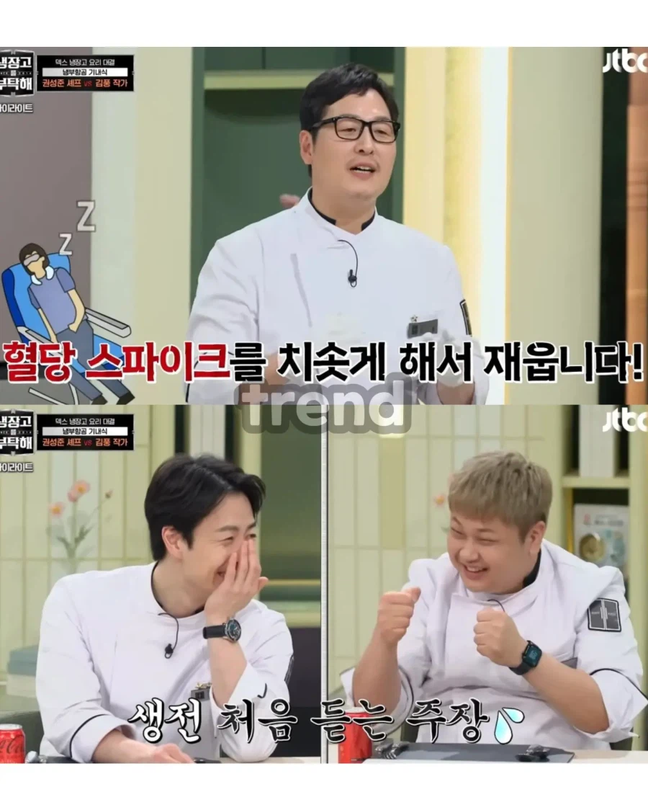
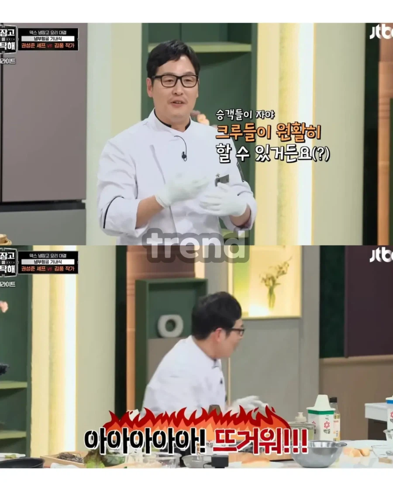
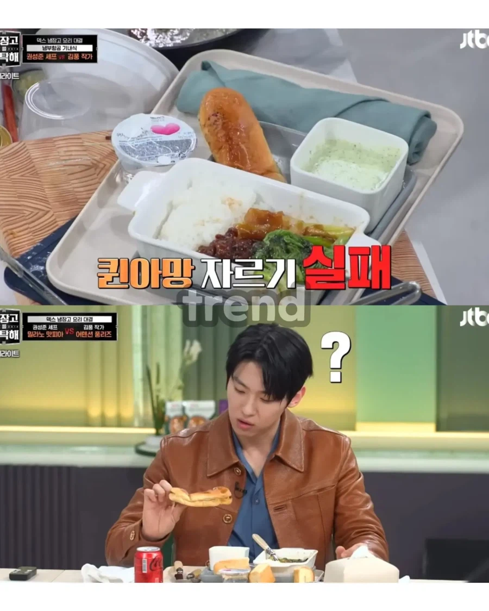
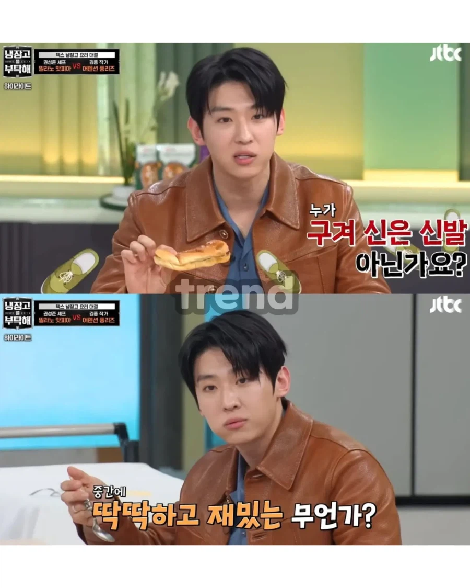
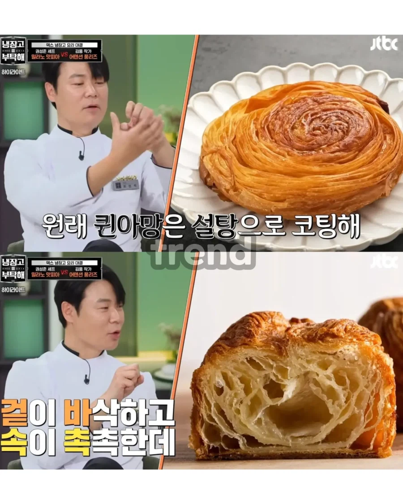
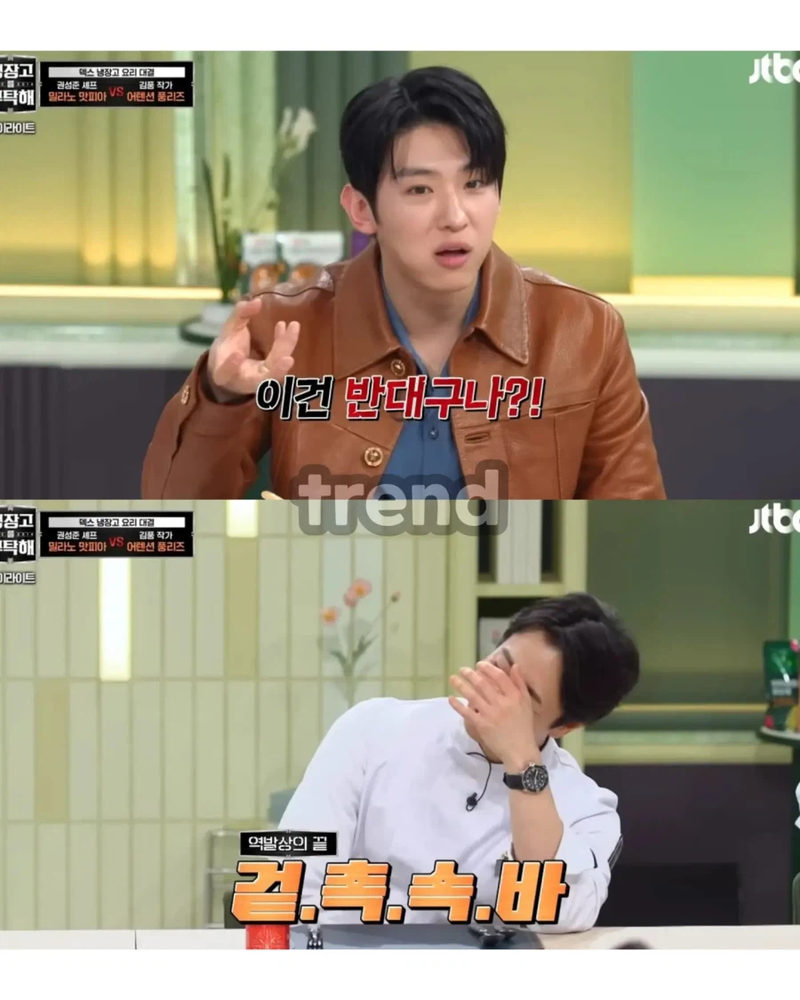
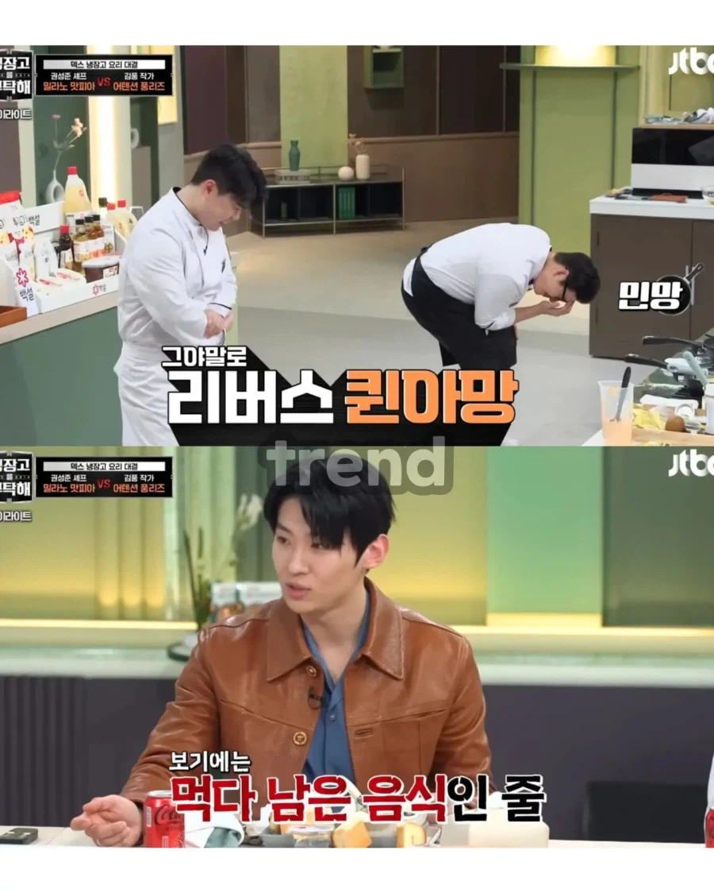
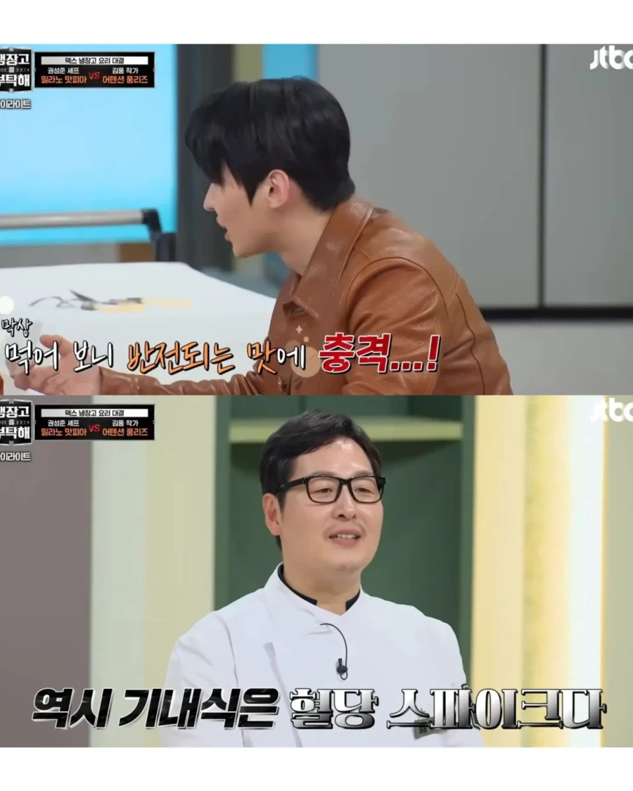
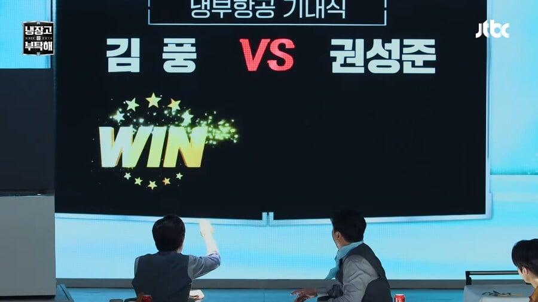

옳다









옳다
암흑요리
대본이려나? 맨날 표정은좆같은표정인데 항상우승하네 ㅋㅋ
맛이 있을리가 없는데, 맛이 있으니 인지 부조화가 옴 ㅋㅋㅋㅋ
지면 짤이 안 돌아
많이지긴 함
저번에 냉부에서 우스갯소리로 나온 말인데
일단 비주얼로 기대감 박살내놓고 먹어보면 맛이 굉장히 진하거나 깊다고 함
풍 작가님이 여러가지로 요리 지식이 높아서 다양한 시도를 많이 하는데 그게 비쥬얼 쪽으로는 담기지 않아도 맛에는 어느정도 담기나봐 ㅋㅋㅋㅋㅋㅋㅋ
그래서 보기에 기대감 떨어졌다가 먹어보고 ㅈㄴ 놀라는 것 같음ㅋㅋㅋㅋㅋㅋ
근데 이게 복불복인가벼 가끔 맛 없다는 음식도 있긴 함ㅋㅋㅋㅋㅋ
약간 중식에 기반한 느낌이라 찐 중식쉐프 상대로 승률이 안 좋다고 했던 것 같고, 맛없을 땐 침착맨과 기안조차도 김풍 선택 안 해버림ㅋㅋㅋㅋ대놓고 너무 맛없다고 질러버린 기안ㅋㅋㅋㅋㅋ
???: 원래 요리대결에서는 셰프들이 승리하고 교주가 패배하는데...
???: 이건 반대구나!!
근데 혈당스파이크로 조져주는게 잠은 잘 와
역시 사파다
발상을 뒤집는 당께요~
모두 마신 김풍앞에 무릎을 꿇을것이다
겉바속촉이라니.... 지금 트루워치프 가로로 죽을까 세로로 죽을까 가루로 죽을까님을 모욕하는것인가
아무것도아닌 워치프 전기통닭구이님이 니 친구냐
호드에선 아무것도 아니지만 자신에겐 호드가 전부였던 트루통닭님.. 그립진 않습니다..
천마현신 만마앙복 신교불패 마도천하
대마교주 김풍 만세만세 만만세
뱅기에서 위스키+콜라+얼음컵 달라해서 위스키콕 만들어 마시면 바로 딥슬립임
겉촉속바를 어케 만들었노
근데 기내식 혈당 스파이크 일리있는게, 항공사마다 기내식 후식으로 딸기 케이크, 푸딩, 과일, 초콜릿 무스 등등 단맛이 강한 음식으로 구성하더라고 ㅋㅋㅋㅋ 먹고나면 졸림
후식 나온거랑 위스키 한잔 달래서 쓱빡
나폴리맛피자 역시 수련이 더 필요함. 시칠리아 찍자
ㅋㅋㅋㅋㅋㅋㅋㅋㅋㅋㅋㅋㅋ
https://www.youtube.com/watch?v=UV0qhCHGSHs
이게 원래 하려던건데 진짜 다르긴 함 ㅋㅋㅋㅋ
마 교 교 주 김 풍